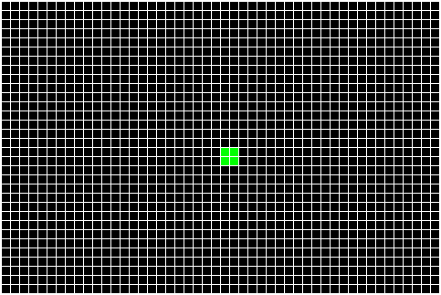

Details
The Game of Life (sometimes known simply as Life) is an example of a cellular automaton and a zero-player game. It takes place on an infinite two-dimensional grid in which cells can be ‘on’ (alive) or ‘off’ (dead), and is defined by a set of rules that jointly determine the state of a cell given the state of its neighbours. Following specification of an initial configuration, patterns evolve over time across the grid requiring no further user input (thus ‘zero-player’). First popularized in 1970 in the Scientific American (Gardner, 1970), the Game of Life has attracted lasting appeal among both scientific and amateur communities. One reason for its appeal is that it is very simple to program, yet at the same time it appears to exemplify emergent and self-organized behaviour. Even though its (simple) rules are specified at the level of individual cells, one sees entities at coarse-grained ‘higher’ levels of description, whose behaviors are better described by rules at these higher levels.
Rules
In its standard format, the Game of Life unfolds on an infinite two-dimensional grid composed of cells each of which is either ‘on/alive’ or ‘off/dead’. The game takes place in discrete time, with the state of each cell at time t determined by its own state and the states of its eight immediate neighbours at t-1 (the Moore neighbourhood of radius 1), according to the following simple rules:
- Any ‘on’ cell (at time t-1) with fewer than two ‘on’ neighbours (at t -1) transitions to an ‘off’ state at time t.
- Any ‘on’ cell (t -1) with two or three ‘on’ neighbours (t -1) remains ‘on’ at time t.
- Any ‘on’ cell (t -1) with more than three ‘on’ neighbours (t -1) transitions to an ‘off’ state at time t
- And ‘off’ cell (t -1) with exactly three ‘on’ neighbours (t -1) transitions to an ‘on’ state at time t.
These rules can be thought to represent basic processes of life and death, motivating the name ‘Game of Life’. Rule 1 represents ‘death by under-population’; rule 2 represents ‘sustainable life’; rule 3 represents ‘death by over-population’, and rule 4 represents ‘birth’. The initial state of the game is the ‘seed’ and all cells are updated simultaneously. Time steps are sometimes called ‘generations’.
Game of Life rules were carefully chosen by Conway to satisfy three simple criteria (Gardner, 1970):
- There should be no initial pattern [configuration] for which there is a simple proof that the population can grow without limit.
- There should be initial patterns that apparently do grow without limit.
- There should be simple initial patterns that grow and change over some time, before coming to end in three possible ways: fading away completely (from overcrowding or becoming too sparse); settling into a stable pattern that remains unchanged thereafter, or entering an oscillating phase in which they repeat an endless cycle of two or more periods.
The Game of Life generates what Wolfram has called ‘class 4’ cellular automata behaviour; that is, behaviour which is neither completely random nor completely repetitive (Wolfram, 2002). The basic Game of Life is very easy to implement in almost any computer language.
Patterns
Since its inception there has been considerable interest in discovering novel patterns within the Game of Life. Patterns can be categorized according to the complexity of their behaviour, from simple unchanging ‘still lives’ to emulations of universal Turing machines (see below). Here are some examples of some Game of Life patterns at the simple end of the scale:
Still life: a stable pattern in which no changes follow the initial configuration.
Oscillator: Patterns that change but repeat themselves after a particular number of iterations (period). The example below shows a blinker, which is a period-2 oscillator.

R-Pentomino: A pentomino is a pattern with five connected cells, with connections along edges (not diagonals). The R-pentomino was studied extensively by Conway, as the only pentomino that does not end quickly; it does however stabilize after 1103 iterations.

Glider: The glider is a very important pattern within the Game of Life, furnishing an early example of ‘emergence’. As the game evolves, a glider will move across the environment as a persistent entity.

Glider gun: Another very important pattern; the first example of a pattern that grows indefinitely. As the name suggests, glider guns generate a continuous stream of glider objects.
Puffer train: A puffer train also produces objects, but unlike a glider gun it does so while moving.